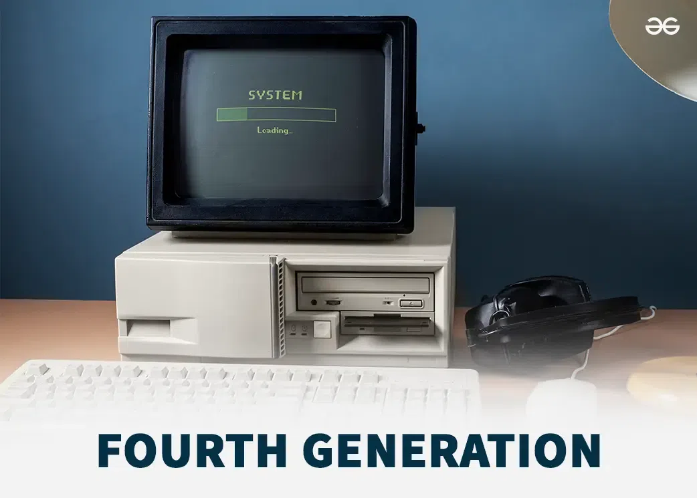
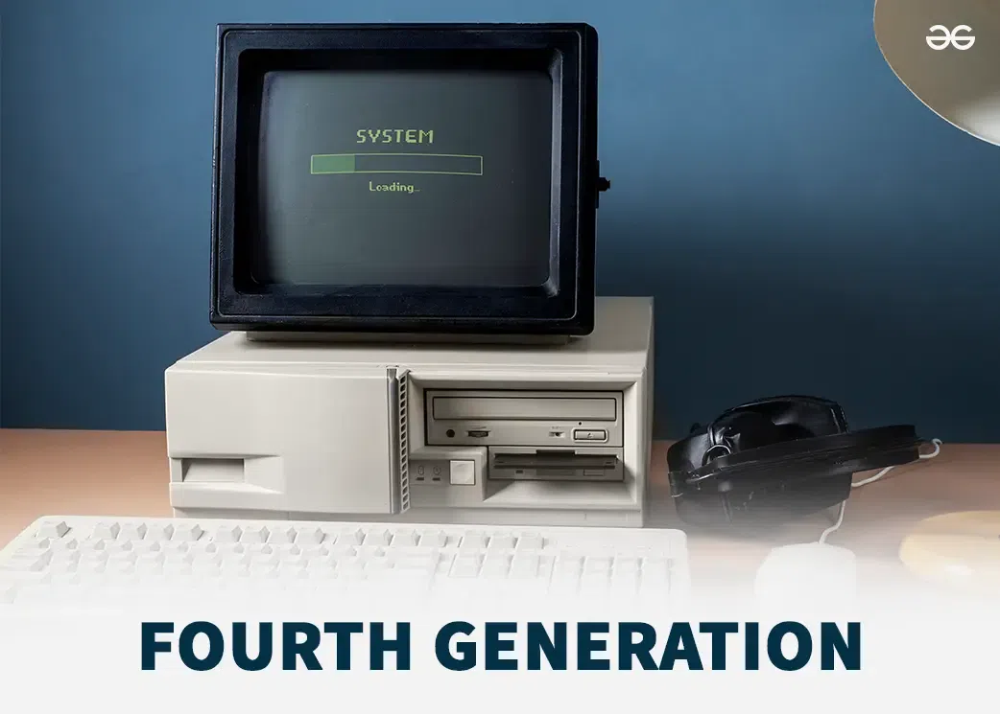

Fourth Generation of Computer (1971–Present)
 

Overview
Fourth generation computers use microprocessors, which combine thousands (later millions) of transistors on a single chip. This allowed computers to become much smaller, faster, and more powerful than third-generation computers. They consume less electricity, generate less heat, and are highly reliable. These computers also support advanced high-level programming languages and graphical interfaces, making them easier to use for a wider audience.
Main Features
- Technology
- Based on microprocessors with integrated circuits containing millions of transistors. Enabled personal computers and workstation-level systems. Supported advanced programming languages like C, C++, and Java.
- Size and Power
- Much smaller and lighter than third-generation machines. Minimal heat generation and low energy consumption. Can fit on desks or in compact offices.
- Input & Output
- Input via keyboards, mouse, and scanners. Output via monitors, printers, and graphical displays.
- Memory and Storage
- Primary memory: RAM (kilobytes to gigabytes). Secondary storage: hard drives, SSDs, optical disks with high capacity.
- Speed
- Very fast, capable of millions of operations per second.
- Reliability
- Extremely reliable; microprocessor failures are rare. Continuous operation possible with minimal maintenance.
- Programming
- Supports high-level and object-oriented languages. Enables development of software for business, education, scientific research, and entertainment.
Examples
- IBM PC – Introduced widespread personal computing.
- Apple Macintosh – First widely used graphical user interface (GUI) computer.
- Compaq Deskpro – Early high-performance business PC.
- Cray Supercomputers – Extremely fast scientific computing systems.
Application Areas
- Business – Office automation, databases, accounting, inventory, online services
- Education – Computer labs, teaching, simulations, e-learning
- Scientific Research – Complex simulations, data analysis, weather forecasting, space programs
- Home Use & Entertainment – Personal computing, gaming, multimedia
- Government & Defense – Data processing, research, communication systems
Conclusion
Fourth generation computers revolutionized computing with microprocessors, enabling personal computers, high-speed business systems, and advanced research machines. They are small, fast, reliable, and energy-efficient, supporting a wide variety of applications in business, education, science, and entertainment.
Advancements over Third Generation
- Microprocessors replaced ICs → smaller, faster, and more powerful
- Supported advanced high-level and object-oriented programming languages
- Greater memory and storage capacity
- Graphical interfaces and personal computing became possible
- Wide range of applications in business, education, science, and home use